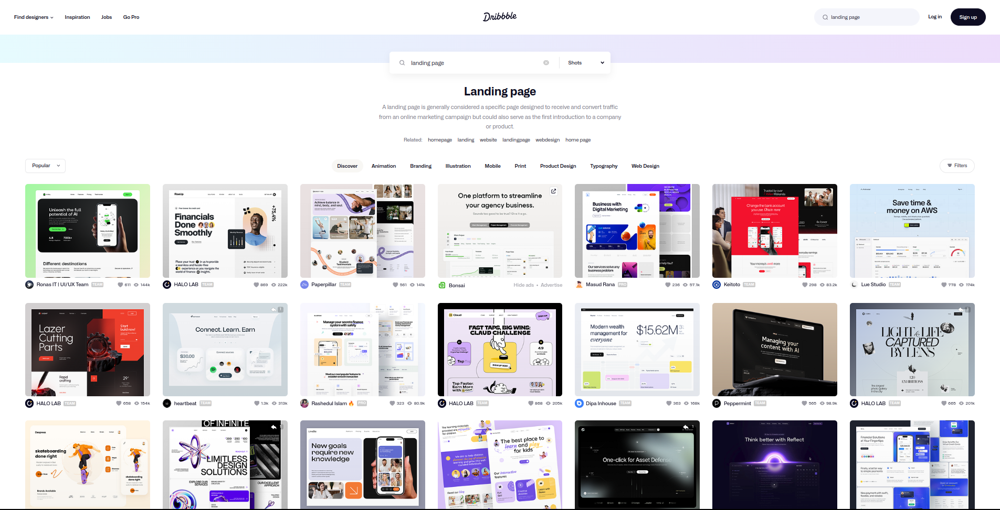
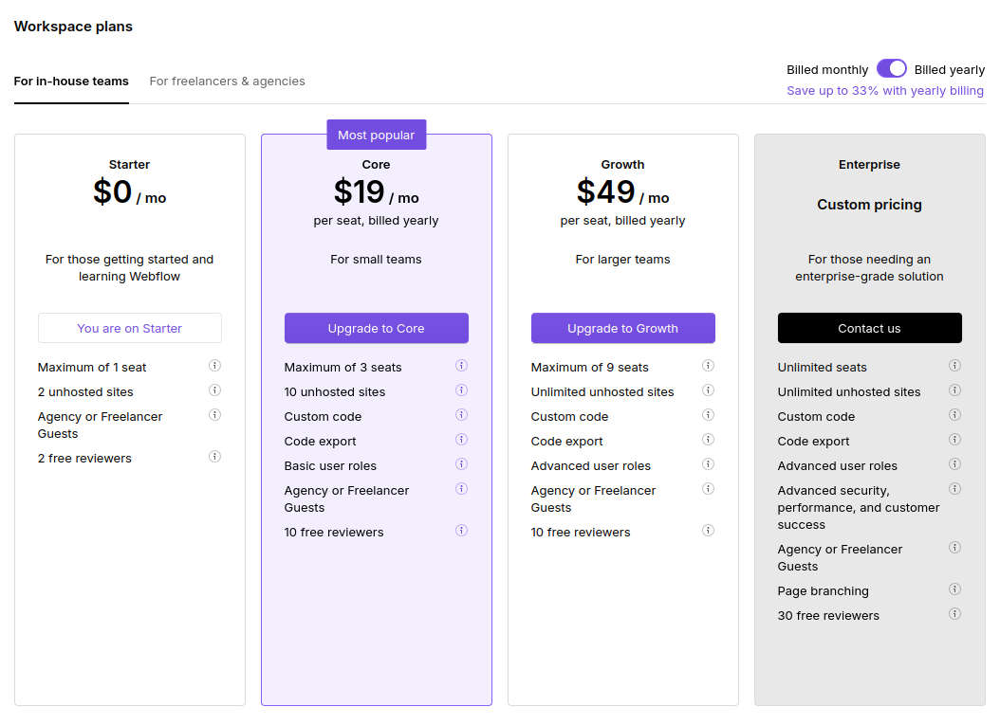

timeline
2003 : Landing pages originated with the IT departments of Microsoft in response to poor online sales of Office.
2009 : several startups, including Unbounce, were formed to simplify and streamline the process.
: The rise of cloud computing and e-commerce provided ideal conditions for these startups to flourish.
: Since then the customer requirements changed, requesting integrations with other solutions such as email marketing, lead nurturing and customer relationship management systems.
Membuat Responsive Landing Page dengan Webflow
django
webflow
landing page
di kelas ini kamu akan belajar tentang landing page dan bagaimana membangun landing page pertamamu dengan webflow
Landing Page
Your Bussiness Terace
What is Landing Page
a landing page, sometimes known as a lead capture page, single property page, static page, squeeze page or a destination page, is a single web page that appears in response to clicking on a search engine optimized search result, marketing promotion, marketing email or an online advertisement
Conventional Landing Page 1
Modern Landing Page

Django & Webflow
Django 2
Web Framework For Perfectionist with Deadline
Django is a high-level Python web framework that encourages rapid development and clean, pragmatic design. Built by experienced developers, it takes care of much of the hassle of web development, so you can focus on writing your app without needing to reinvent the wheel. It’s free and open source.
Why Django? 3
Django follows the “Batteries included” philosophy and provides almost everything developers might want to do “out of the box”. Because everything you need is part of the one “product”, it all works seamlessly together, follows consistent design principles, and has extensive and up-to-date documentation.
Django can be (and has been) used to build almost any type of website — from content management systems and wikis, through to social networks and news sites. It can work with any client-side framework, and can deliver content in almost any format (including HTML, RSS feeds, JSON, and XML).
Internally, while it provides choices for almost any functionality you might want (e.g. several popular databases, templating engines, etc.), it can also be extended to use other components if needed.
Django helps developers avoid many common security mistakes by providing a framework that has been engineered to “do the right things” to protect the website automatically. For example, Django provides a secure way to manage user accounts and passwords, avoiding common mistakes like putting session information in cookies where it is vulnerable (instead cookies just contain a key, and the actual data is stored in the database) or directly storing passwords rather than a password hash.
A password hash is a fixed-length value created by sending the password through a cryptographic hash function. Django can check if an entered password is correct by running it through the hash function and comparing the output to the stored hash value. However due to the “one-way” nature of the function, even if a stored hash value is compromised it is hard for an attacker to work out the original password.
Django enables protection against many vulnerabilities by default, including SQL injection, cross-site scripting, cross-site request forgery and clickjacking (see Website security for more details of such attacks).
Django uses a component-based “shared-nothing” architecture (each part of the architecture is independent of the others, and can hence be replaced or changed if needed). Having a clear separation between the different parts means that it can scale for increased traffic by adding hardware at any level: caching servers, database servers, or application servers. Some of the busiest sites have successfully scaled Django to meet their demands (e.g. Instagram and Disqus, to name just two).
Django code is written using design principles and patterns that encourage the creation of maintainable and reusable code. In particular, it makes use of the Don’t Repeat Yourself (DRY) principle so there is no unnecessary duplication, reducing the amount of code. Django also promotes the grouping of related functionality into reusable “applications” and, at a lower level, groups related code into modules (along the lines of the Model View Controller (MVC) pattern).
Django is written in Python, which runs on many platforms. That means that you are not tied to any particular server platform, and can run your applications on many flavors of Linux, Windows, and macOS. Furthermore, Django is well-supported by many web hosting providers, who often provide specific infrastructure and documentation for hosting Django sites.
Initialize Django App
Run Local Django Server
finally…
python manage.py runserverWebflow
bringing development superpowers to everyone.
For Designer or Developer?
for designer with minor coding background and developer with minor design background
Create first Landing Page in Webflow
https://tapak-landing-page.webflow.io/
Export Webflow Code to HTML
- Paid - Subscribe to premium member 
- Free - Download the HTML page